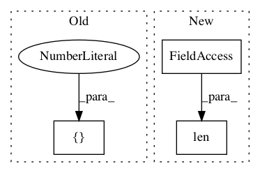

ea60242913a0ce53f4e033fee3be1f55e2ceb7b0,basenji/metrics.py,PearsonR,update_state,#PearsonR#Any#Any#Any#,187

Before Change
y_true = tf.cast(y_true, "float32")
y_pred = tf.cast(y_pred, "float32")
product = tf.reduce_sum(tf.multiply(y_true, y_pred), axis=[0,1])
self._product.assign_add(product)
true_sum = tf.reduce_sum(y_true, axis=[0,1])
After Change
y_true = tf.cast(y_true, "float32")
y_pred = tf.cast(y_pred, "float32")
if len(y_true.shape) == 2:
reduce_axes = 0
else:
reduce_axes = [0,1]
In pattern: SUPERPATTERN
Frequency: 3
Non-data size: 3
Instances
Project Name: calico/basenji
Commit Name: ea60242913a0ce53f4e033fee3be1f55e2ceb7b0
Time:
Author: null
File Name: basenji/metrics.py
Class Name: PearsonR
Method Name: update_state
Project Name: calico/basenji
Commit Name: ea60242913a0ce53f4e033fee3be1f55e2ceb7b0
Time:
Author: null
File Name: basenji/metrics.py
Class Name: R2
Method Name: update_state
Project Name: asyml/texar
Commit Name: 1a7fa6010b7234bb9efddf761c9bf52af07dc347
Time:
Author: null
File Name: texar/modules/embedders/position_embedders.py
Class Name: PositionEmbedder
Method Name: _build